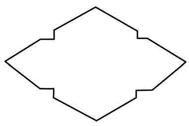

- Smooth them with a warm iron after drying. This will serve as a template for creating an envelope pattern. Figure 3 shows unfolded and folded templates;


- Place the template on moderately thick paper;
- Secure the template onto the thick paper using pins or clips;
- Use a ruler and pencil to draw lines along the edges of the template;
- Remove the pins or clips, and then separate the template from the thick paper;
- Cut the paper using a trimming knife or pair of scissors, or blade. After these steps, the template for the envelope or bag is ready, as shown in Figure 4;

- Fold side number 3 inward. Fold it along the straight line between the corners of that side;
- Fold side number 4 in the same way. Sides 3 and 4 will lie flat against each other as shown in Figure 5;